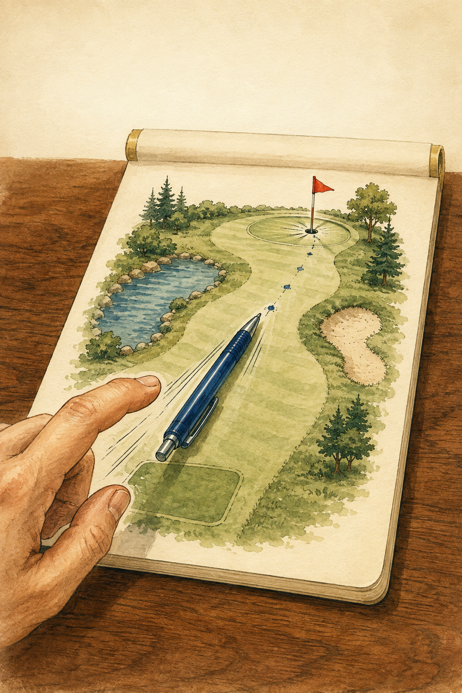

A little golf.
A lot of fun.
Stand your pen, flick toward the flag, and mark every stroke on the page.

How to Play Pen Pad Golf
Stand it. Flick it. Mark it. Lowest score wins.
- 1Start in the tee box.
- 2Stand your pen upright.
- 3Flick the pen toward the hole.
- 4Mark where the pen lands — that’s 1 stroke.
- 5Keep flicking from the new mark until you reach the hole.